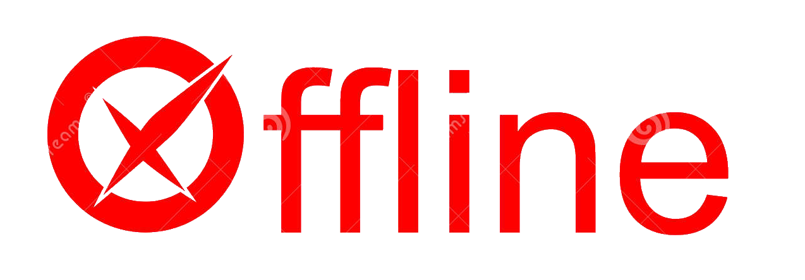

Online is good for testing against the real network, viewing websites, publishing code to the real environment, etc.
Offline is fastest, and everything is local. Can type anything for the invitation token and it will pass. Much faster for development and testing code.
@SAFE-FS Site Created by SAFE-FS vAlpha 2